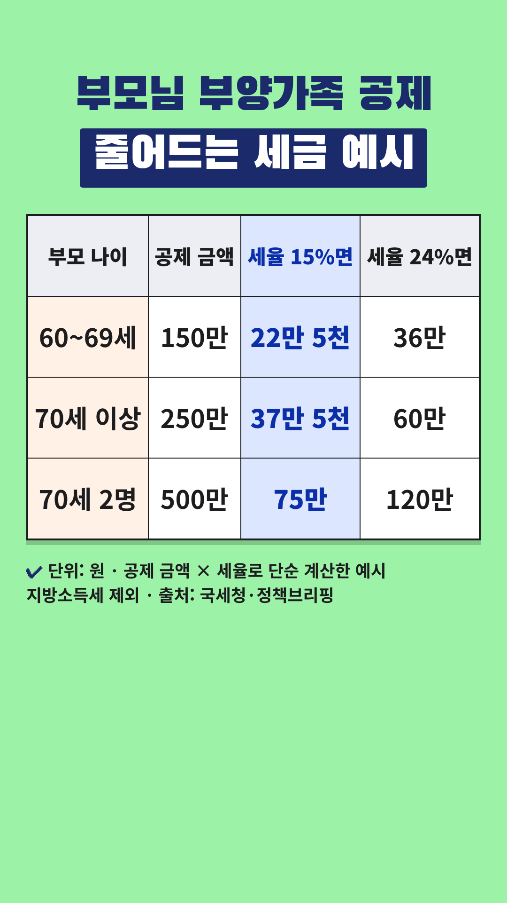

Vrew 작업 카드
2026-10-31-부모님-부양가족공제 · 사실 검증과 업로드 전 점검을 통과한 회차입니다. 위에서부터 차례로 복사해 붙여넣으세요.
- 대본 붙여넣기 → AI 목소리(차분한 중년, 0.9~1.0배)
- 장면마다 AI 이미지 문구 복사 → 이미지 바꾸기
- 큰 글자가 있는 장면에 텍스트 추가
- 배경음악(오디오 보관함·Vrew 음원) → 내보내기 mp4
- 제목·설명란·고정댓글 복사해 업로드
0단계 · 첫 장면 강조 제목
Vrew 1번 장면 → 삽입 → 이미지 → 같은 폴더의 title-overlay.png(투명 배경) → 화면 전체 크기로 맨 위에 얹기. 1번 장면의 '큰 글자'는 이 이미지가 대신하므로 따로 넣지 않습니다. 아래 배경은 AI 이미지 자리 표시입니다.
0-1단계 · 숫자 카드 (표 이미지)

표시된 장면들을 하나로 이어 붙이거나 장면마다 → 이미지 바꾸기 → 같은 폴더의 number-N.png를 화면 전체 크기로 넣습니다. 이 장면들에는 AI 이미지와 큰 글자를 넣지 않습니다. 자막은 화면 맨 아래에 두어 표를 가리지 않게 합니다.
1단계 · 대본
1. 대본 붙여넣기
Vrew → 새로 만들기 → 텍스트로 비디오 만들기 → 쇼츠 9:16 → 대본 칸에 붙여넣기
부모님 부양하면 150만 원 소득공제돼요. 조건은 2가지예요. 부모님이 만 60세 이상이고 소득이 기준 이하면 돼요. 만 70세 이상이면 100만 원이 더해져 1명당 250만 원이 돼요. 표처럼 세율 15%면 세금이 150만 원은 22만 5천 원, 250만 원은 37만 5천 원 줄어요. 나이는 그해 마지막 날 기준이에요. 따로 사셔도 실제로 부양하면 돼요. 다만 형제자매 중 1명만 받을 수 있어요. 기준을 넘으면 추가 100만 원도 안 돼요. 기준 금액은 국세청 126에서 확인하세요. 정리하면 150만, 70세 이상 250만 원. 개인 상황에 따라 다르니 전문가와 상담하세요.
2~3단계 · 장면별 이미지와 큰 글자
장면 1
나레이션부모님 부양하면 150만 원 소득공제돼요.
AI 이미지거실 소파에서 80대 어머니와 나란히 앉아 웃는 50대 후반 한국인 남성, 위쪽은 밝은 벽과 창문 빛, 따뜻한 자연광, 사실적인 사진 스타일, 세로 9:16 구도, 화면에 글자 없음
큰 글자부모님 부양하면
150만 원 소득공제
장면 2
나레이션조건은 2가지예요.
AI 이미지탁자 위에 놓인 서류 봉투와 계산기, 펜, 글자는 흐릿하게, 따뜻한 자연광, 사실적인 사진 스타일, 세로 9:16 구도, 화면에 글자 없음
큰 글자조건 2가지
장면 3
나레이션부모님이 만 60세 이상이고
AI 이미지공원 산책로를 천천히 함께 걷는 70대 한국인 노부부, 따뜻한 자연광, 사실적인 사진 스타일, 세로 9:16 구도, 화면에 글자 없음
큰 글자만 60세 이상
장면 4
나레이션소득이 기준 이하면 돼요.
AI 이미지탁자 위 가계부와 돋보기안경, 숫자는 흐릿하게, 따뜻한 자연광, 사실적인 사진 스타일, 세로 9:16 구도, 화면에 글자 없음
큰 글자소득 기준 이하
장면 5
나레이션만 70세 이상이면 100만 원이 더해져
숫자 카드number-1.png를 화면 전체로 (AI 이미지·큰 글자 대신)
장면 6
나레이션1명당 250만 원이 돼요.
숫자 카드number-1.png를 화면 전체로 (AI 이미지·큰 글자 대신)
장면 7
나레이션표처럼 세율 15%면 세금이
숫자 카드number-1.png를 화면 전체로 (AI 이미지·큰 글자 대신)
장면 8
나레이션150만 원은 22만 5천 원,
숫자 카드number-1.png를 화면 전체로 (AI 이미지·큰 글자 대신)
장면 9
나레이션250만 원은 37만 5천 원 줄어요.
숫자 카드number-1.png를 화면 전체로 (AI 이미지·큰 글자 대신)
장면 10
나레이션나이는 그해 마지막 날 기준이에요.
AI 이미지벽에 걸린 달력의 마지막 장, 숫자는 흐릿하게, 따뜻한 자연광, 사실적인 사진 스타일, 세로 9:16 구도, 화면에 글자 없음
큰 글자그해 마지막 날 기준
장면 11
나레이션따로 사셔도 실제로 부양하면 돼요.
AI 이미지집에서 휴대폰으로 부모님께 전화하며 웃는 50대 한국인 여성, 따뜻한 자연광, 사실적인 사진 스타일, 세로 9:16 구도, 화면에 글자 없음
큰 글자따로 살아도 가능
장면 12
나레이션다만 형제자매 중 1명만 받을 수 있어요.
AI 이미지식탁에 둘러앉아 식사하는 50~60대 한국인 형제자매와 80대 부모, 따뜻한 자연광, 사실적인 사진 스타일, 세로 9:16 구도, 화면에 글자 없음
큰 글자형제자매 중 1명만
장면 13
나레이션기준을 넘으면 추가 100만 원도 안 돼요.
AI 이미지탁자 위 서류를 꼼꼼히 확인하는 60대 한국인 남성, 글자는 흐릿하게, 따뜻한 자연광, 사실적인 사진 스타일, 세로 9:16 구도, 화면에 글자 없음
큰 글자추가 100만 원도 불가
장면 14
나레이션기준 금액은 국세청 126에서 확인하세요.
AI 이미지집 식탁에서 유선 전화로 상담 전화를 거는 60대 한국인 남성, 메모지는 흐릿하게, 따뜻한 자연광, 사실적인 사진 스타일, 세로 9:16 구도, 화면에 글자 없음
큰 글자국세청 126 확인
장면 15
나레이션정리하면 150만, 70세 이상 250만 원.
AI 이미지계산기를 두드리며 메모하는 60대 한국인 여성의 손, 따뜻한 자연광, 사실적인 사진 스타일, 세로 9:16 구도, 화면에 글자 없음
큰 글자150만 원
70세 이상 250만 원
장면 16
나레이션개인 상황에 따라 다르니 전문가와 상담하세요.
AI 이미지상담 창구에서 상담원과 이야기하는 60대 한국인 부부, 따뜻한 자연광, 사실적인 사진 스타일, 세로 9:16 구도, 화면에 글자 없음
5단계 · 업로드 정보
제목
부모님 부양하면 1명당 150만 원 소득공제 받는 조건
설명란
[음원] 칸은 고른 배경음악으로 채운 뒤 올리세요.
만 60세 이상 부모님(장인·장모·시부모 포함)을 실제로 부양하면 연말정산이나 종합소득세 신고 때 1명당 150만 원을 소득에서 빼 줘요(인적공제 중 '기본공제'). 만 70세 이상이면 경로우대 추가공제 100만 원이 더해져 1명당 250만 원이에요. 나이는 그해 마지막 날까지 그 나이가 되면 돼요. 따로 사셔도 생활비를 드리는 등 실제로 부양하면 공제받을 수 있지만, 같은 부모님은 형제자매 중 1명만 공제받을 수 있어요. 영상의 표는 공제 금액에 세율(15%·24%)을 곱한 단순 계산 예시예요. 지방소득세는 빼고 계산했고, 실제로 줄어드는 세금은 소득과 다른 공제에 따라 달라요. [소득 기준, 꼭 확인하세요] - 현행 기준(국세청 안내): 부모님의 연간 소득금액 합계 100만 원 이하, 근로소득만 있으면 총급여 500만 원 이하. - 기준을 넘으면 기본공제와 경로우대 추가공제를 모두 받을 수 없어요. - 정부의 세제개편안(정책브리핑 2026.08.13 보도)에는 이 기준을 소득금액 300만 원 이하, 총급여 750만 원 이하로 높이는 안이 담겼어요. 국회 심의에 따라 내용과 시행 시기가 달라질 수 있으니, 신고 전에 국세청 연말정산 종합안내 또는 국세상담센터(국번 없이 126)에서 확인하세요. [출처] - 국세청 '자주 묻는 연말정산 ⑨인적공제 1화' (2024.12.04): https://www.korea.kr/news/policyNewsView.do?newsId=148937039 - 국세청 '자주 묻는 연말정산 ④ 65세 경로우대자 추가 공제?' (2024.11.18): https://www.korea.kr/news/policyNewsView.do?newsId=148936323 - 국세청 '연말정산 과다공제 사례 ①' (2024.12.19): https://www.korea.kr/multi/visualNewsView.do?newsId=148937690 - 국세청 '소득 100만 원 넘는 부양가족 공제, 안돼요?…연말정산 오답 공개' (2026.01.23): https://www.korea.kr/news/policyNewsView.do?newsId=148958494 - 법제처 '식대 비과세 월 20만 원·신용카드 소득공제 한도 상향' (세율 구간, 2023.12.11): https://www.korea.kr/news/policyNewsView.do?newsId=148923639 - 정책브리핑 '세제개편안 살펴보니' (부양가족 소득 기준 상향 정부안, 2026.08.13): https://www.korea.kr/news/policyNewsView.do?newsId=148969870 - 법적 근거: 소득세법 제50조(기본공제), 제51조(추가공제), 제55조(세율) (국가법령정보센터 law.go.kr) [음원] [Vrew 작업 후 vrew.md 음원 기록란에서 채우기] [안내] 이 영상은 공공기관 자료를 바탕으로 한 일반 정보이며, 세무 상담을 대신하지 않습니다. 공제 가능 여부와 줄어드는 세금은 소득, 다른 공제, 가족 상황에 따라 다르니 국세청(☎126)이나 세무 전문가와 상담하세요. 안내 내용은 2026년 10월 31일 열람 기준이에요. #쇼츠 #연말정산 #부양가족공제 #부모님 #절세
고정댓글
부모님을 부양가족으로 올려 공제받아 보셨나요? 형제자매끼리 누가 받을지 어떻게 정하셨는지 댓글로 나눠 주세요.
업로드 추천 시간: 저녁 8시